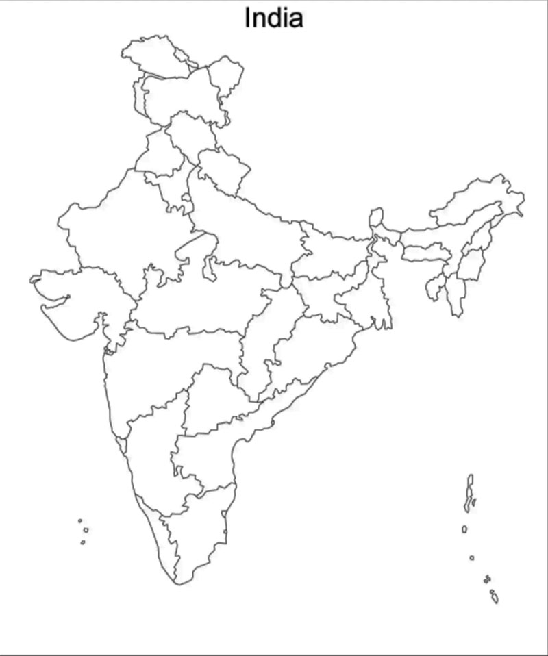

India is the second-most populous country, the seventh-largest country by land area,
and the largest democracy in the world. Bounded by the Indian Ocean on the south,
the Arabian Sea on the southwest, and the Bay of Bengal on the southeast, it shares
land borders with Pakistan to the west; China, Nepal, and Bhutan to the north;
and Bangladesh and Myanmar to the east. In the Indian Ocean, India is in the vicinity
of Sri Lanka and the Maldives; its Andaman and Nicobar Islands share a maritime borders
with Thailand, Myanmar and Indonesia.
National Anthem
Jana Gana Mana is the national anthem of India. It was originally composed as Bharoto Bhagyo
Bidhata in Bengali by polymath Rabindranath Tagore. The first stanza of the song Bharoto
Bhagyo Bidhata was adopted by the Constituent Assembly of India as the National Anthem on
24 January 1950. A formal rendition of the national anthem takes approximately 52 seconds.
It was first publicly sung on 27 December 1911 at the Calcutta Session of the Indian National
Congress.

Administration
India is a federal union comprising 28 states and 8 union territories.
All states, as well as the union territories of Jammu and Kashmir, Puducherry
and the National Capital Territory of Delhi, have elected legislatures and
governments. The remaining five union territories are directly ruled by the
central government through appointed administrators. In 1956, under the States
Reorganisation Act, states were reorganised on a linguistic basis. There are over
a quarter of a million local government bodies at city, town, block, district and village levels.